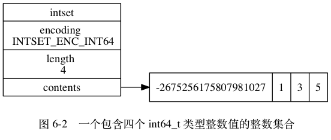

整数集合的实现¶
整数集合（intset）是 Redis 用于保存整数值的集合抽象数据结构，
它可以保存类型为 int16_t 、 int32_t 或者 int64_t 的整数值，
并且保证集合中不会出现重复元素。
每个 intset.h/intset 结构表示一个整数集合：
typedef struct intset {
// 编码方式
uint32_t encoding;
// 集合包含的元素数量
uint32_t length;
// 保存元素的数组
int8_t contents[];
} intset;
contents 数组是整数集合的底层实现：
整数集合的每个元素都是 contents 数组的一个数组项（item），
各个项在数组中按值的大小从小到大有序地排列，
并且数组中不包含任何重复项。
length 属性记录了整数集合包含的元素数量，
也即是 contents 数组的长度。
虽然 intset 结构将 contents 属性声明为 int8_t 类型的数组，
但实际上 contents 数组并不保存任何 int8_t 类型的值 ——
contents 数组的真正类型取决于 encoding 属性的值：
- 如果
encoding属性的值为INTSET_ENC_INT16， 那么contents就是一个int16_t类型的数组， 数组里的每个项都是一个int16_t类型的整数值 （最小值为-32,768，最大值为32,767）。 - 如果
encoding属性的值为INTSET_ENC_INT32， 那么contents就是一个int32_t类型的数组， 数组里的每个项都是一个int32_t类型的整数值 （最小值为-2,147,483,648，最大值为2,147,483,647）。 - 如果
encoding属性的值为INTSET_ENC_INT64， 那么contents就是一个int64_t类型的数组， 数组里的每个项都是一个int64_t类型的整数值 （最小值为-9,223,372,036,854,775,808，最大值为9,223,372,036,854,775,807）。
图 6-1 展示了一个整数集合示例：
encoding属性的值为INTSET_ENC_INT16， 表示整数集合的底层实现为int16_t类型的数组， 而集合保存的都是int16_t类型的整数值。length属性的值为5， 表示整数集合包含五个元素。contents数组按从小到大的顺序保存着集合中的五个元素。- 因为每个集合元素都是
int16_t类型的整数值， 所以contents数组的大小等于sizeof(int16_t) * 5 = 16 * 5 = 80位。
![digraph {
label = "\n 图 6-1 一个包含五个 int16_t 类型整数值的整数集合";
rankdir = LR;
node [shape = record];
intset [label = " intset | encoding \n INTSET_ENC_INT16 | length \n 5 | <contents> contents "];
//contents [label = " { { 0 位至 15 位 | <arrow> -6370 } | { 16 位至 31 位 | -5 } | { 32 位至 47 位 | 18 } | { 48 至 63 位 | 233 } | { 64 位至 79 位 | 14632 } } "];
//intset:contents -> contents:arrow;
contents [label = " { -6370 | -5 | 18 | 233 | 14632 } "];
intset:contents -> contents;
}](../../_images/graphviz-acf7fe010d7b09c5d2500c72eb555863e67ad74f.png)
图 6-2 展示了另一个整数集合示例：
encoding属性的值为INTSET_ENC_INT64， 表示整数集合的底层实现为int64_t类型的数组， 而数组中保存的都是int64_t类型的整数值。length属性的值为4， 表示整数集合包含四个元素。contents数组按从小到大的顺序保存着集合中的四个元素。- 因为每个集合元素都是
int64_t类型的整数值， 所以contents数组的大小为sizeof(int64_t) * 4 = 64 * 4 = 256位。

虽然 contents 数组保存的四个整数值中，
只有 -2675256175807981027 是真正需要用 int64_t 类型来保存的，
而其他的 1 、 3 、 5 三个值都可以用 int16_t 类型来保存，
不过根据整数集合的升级规则，
当向一个底层为 int16_t 数组的整数集合添加一个 int64_t 类型的整数值时，
整数集合已有的所有元素都会被转换成 int64_t 类型，
所以 contents 数组保存的四个整数值都是 int64_t 类型的，
不仅仅是 -2675256175807981027 。
接下来的一节将对整数集合的升级操作进行详细的介绍。